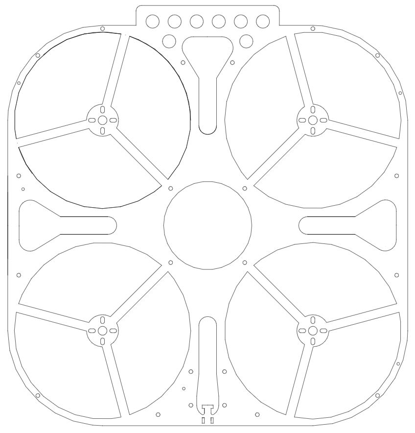
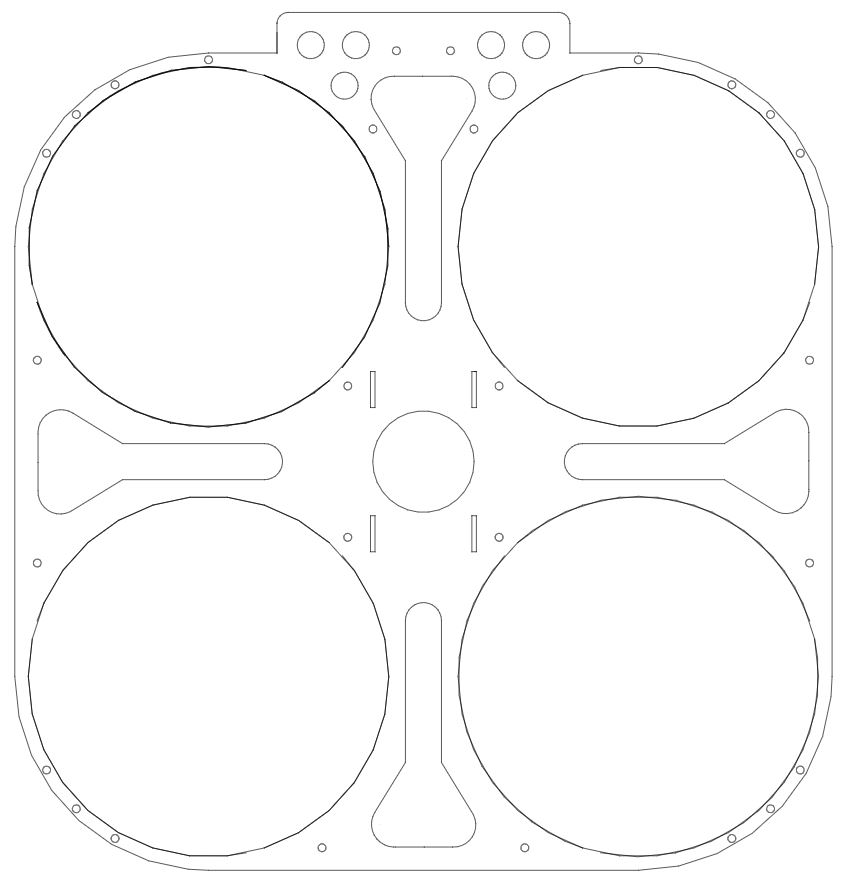
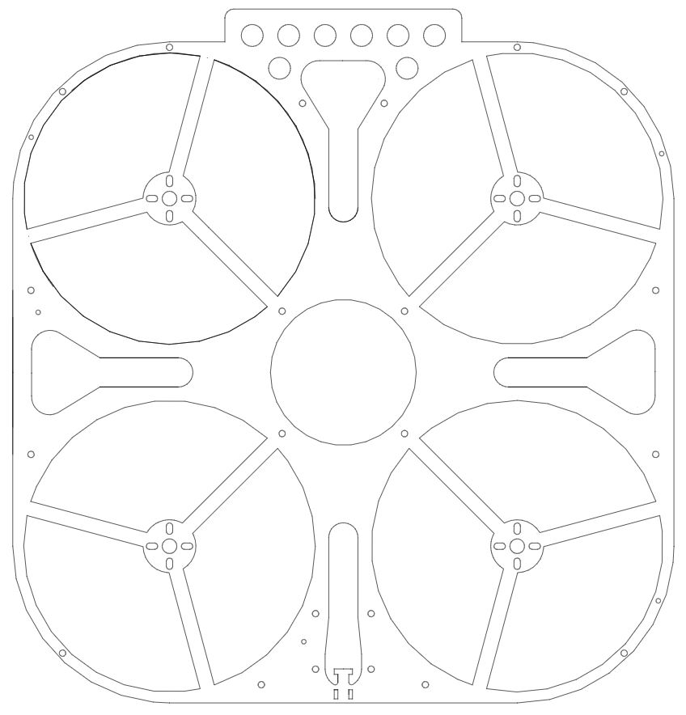
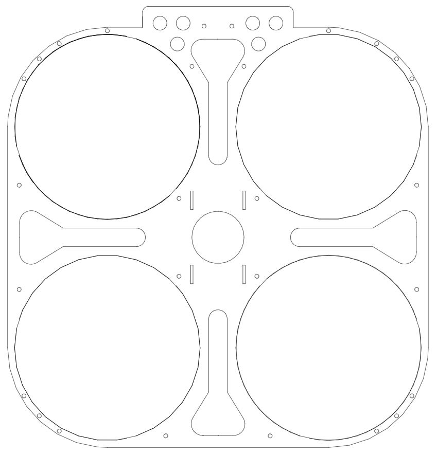

UAV
Introduction
This platform, as a flying platform, has the characteristics of high vibration and high aggressiveness. However, due to the limited payload capacity of the drone, we only carried a small number of sensors. Due to the need to install specific sensors and control the overall weight and wheelbase, the platform was designed, processed, and built by the author himself. The UAV platform adopts a quadcopter structure, and the rack design is shown in Figure 2. The platform adopts four 2806 brushless motors and can provide a total lift of 8.4kg at 24V voltage using a 6-inch three bladed propeller. The flight control adopts the Nora model flight control from Lei Xun Innovation Company, and the electrical adjustment adopts the 45A four in one electrical adjustment of the V45 model T-motor.
Sensor list
(1)Solid-state LiDAR (Livox Mid-360)
Frequency:
10Hz
FOV:
360°(Horizontal),59°(Vertical)
Distance:
up to 70m
(1)Solid-state LiDAR (Livox Mid-360)
Frequency: |
10Hz |
FOV: |
360°(Horizontal),59°(Vertical) |
Distance: |
up to 70m |
(2)RGB-D Camera (D435)
Frequency:
30Hz
Resolution:
1280*720 pixel
FOV:
87°(Horizontal),58°(Vertical)
(2)RGB-D Camera (D435)
Frequency: |
30Hz |
Resolution: |
1280*720 pixel |
FOV: |
87°(Horizontal),58°(Vertical) |
(5)Event Camera
Inivation DAVIS346-color:
Quantity:
X2
Frequency:
1000Hz
Resolution:
346×260 pixel
IMU:
MPU6150, 6-axis
(5)Event Camera
Inivation DAVIS346-color: |
Quantity: |
X2 |
|
Frequency: |
1000Hz |
||
Resolution: |
346×260 pixel |
||
IMU: |
MPU6150, 6-axis |
Sensor setups
 



CAD drawings
Calibration rosbag and Our calibration result
title1 |
title2 |
title3 |
title4 |
|---|---|---|---|
 |
 |
|
|
Calibration：rosbag |
Calibration：rosbag |
Calibration：rosbag |
Calibration：rosbag |
Our calibration result：txt
Data
MCR_loop_light |
MCR_loop_dark |
|||
|---|---|---|---|---|
|
|
|||
|
|
||||
Data： rosbag |
Groud-Truth： txt |
Data： rosbag |
Groud-Truth： txt |
|
MCR_eight_loop_light |
MCR_eight_loop_dark |
|||
|---|---|---|---|---|
|
|
|||
|
|
||||
Data： rosbag |
Groud-Truth： rosbag |
Data： rosbag |
Groud-Truth： rosbag |
|
All topics published by UAV platform
| Sensors | Topics |
|---|---|
| Event cameras | /DAVIS346_left/events |
| /DAVIS346_left/image | |
| /DAVIS346_left/imu | |
| /DAVIS346_right/events | |
| /DAVIS346_right/image | |
| /DAVIS346_right/imu | |
| VI-sensor | /camera/infra1/image_rect_raw |
| /camera/infra2/image_rect_raw | |
| Solid-State LiDAR | /livox/imu |
| /livox/lidar | |
| Flight controller | /mavros/imu/data_raw |
| NOKOV ground truth | /vrpn_client_node/Trackerxx/pose |